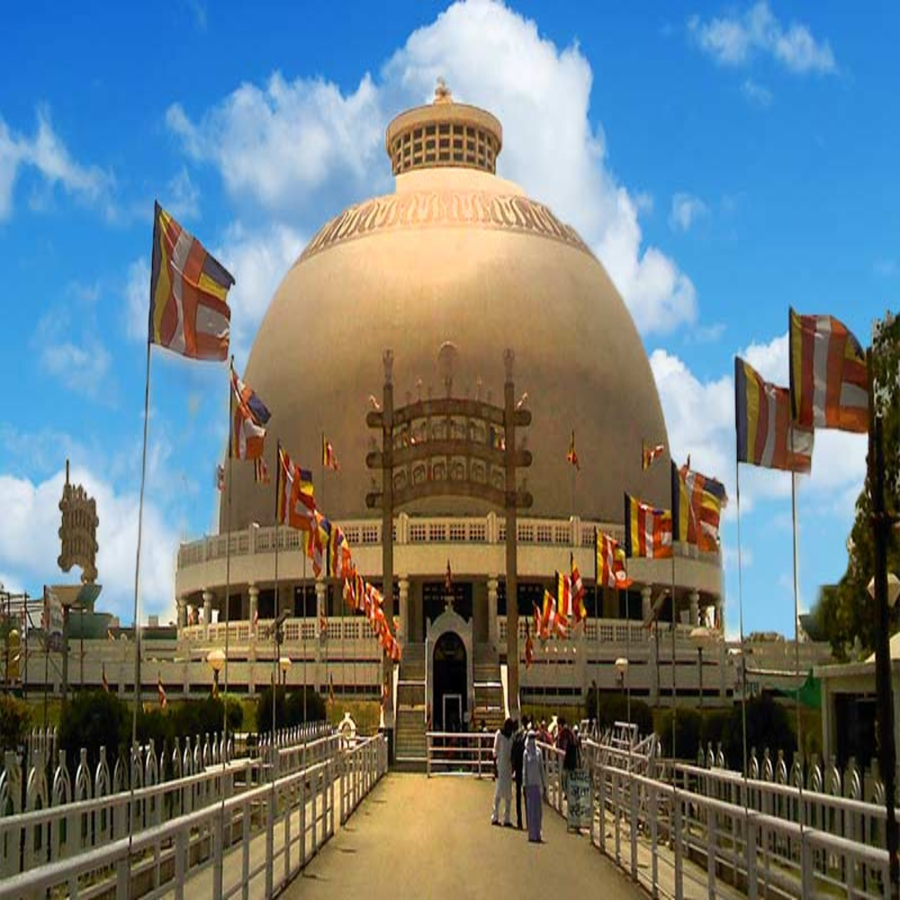

>The Gateway of India is an arch-monument built in the early 20th century in the city of Mumbai (Bombay), India. The foundation stone was laid in March 1913 for a monument built in the Indo-Islamic style. the Gateway was used as a symbolic ceremonial entrance to India for important colonial personnel.
Taj Hotel
>The Taj Mahal Palace is a heritage, five-star, luxury hotel in the Colaba area of Mumbai, Maharashtra, India, situated next to the Gateway of India.[1] Built in the Saracenic Revival style, it opened in 1903 as the Taj Mahal Hotel[2][3][4] and has historically often been known simply as "The Taj". The hotel is named after the Taj Mahal, which is located in the city of Agra approximately 1,050 kilometres (650 mi) from Mumbai. It has been considered one of the finest hotels in the East since the time of the British Raj.

Lonavala
>Lonavla and the adjacent Khandala are twin hill stations 622 metres (2,041 ft) above sea level, in the Sahyadri ranges that demarcate the Deccan Plateau and the Konkan coast. The hill stations sprawl over an approximate area of 38 square kilometres (15 sq mi). Tourism peaks during the monsoon season.

Ellora Caves
Ellora is a UNESCO World Heritage Site located in the Aurangabad of Maharashtra, India. It is one of the largest rock-cut Hindu temple cave complexes in the world, with artwork dating from the period 600–1000 CE.[1][2] Cave 16 features the largest single monolithic rock excavation in the world, the Kailash temple, a chariot-shaped monument dedicated to the god Shiva. The Kailash temple excavation also features sculptures depicting various Hindu deities as well as relief panels summarizing the two major Hindu epics.
Aurangabad
Aurangabad is a city in Maharashtra state in India. The city is a tourism hub, surrounded by many historical monuments, including the Ajanta Caves and Ellora Caves, which are UNESCO World Heritage Sites, as well as Bibi Ka Maqbara (replica of Taj Mahal) and Panchakki.. Aurangabad is known as "The City of Gates".

Nagpur-DeekshaBhoomi
Deekshabhoomi is a sacred monument of Navayana Buddhism located at Nagpur city in Maharashtra state of India, where Dr. B. R. Ambedkar, embraced Buddhism with approximately 600,000 of his followers mainly scheduled caste peoples on Ashoka Vijaya Dashami on 14 October 1956. Ambedkar revived Buddhism in India.

Mahabaleshwar
Mahabaleshwar is a small town and a municipal council in Satara district, Maharashtra, India. It is a place of pilgrimage for Hindus because Krishna river has its origin here.[1] The British colonial rulers developed the town as a hill station, and served as the summer capital of Bombay Presidency during the British Raj.

Nashik
Nashik is an ancient city in the northwest region of Maharashtra in India. Situated on the banks of Godavari river Nashik is best known for being one of Hindu pilgrimage sites, that of Kumbh Mela which is held every 12 years.

Haji Ali Dargah
The Haji Ali Dargah is a mosque and dargah or the monument of Pir Haji Ali Shah Bukhari located on an islet off the coast of Worli in the southern Mumbai. An exquisite example of Indo-Islamic Architecture, associated with legends about doomed lovers, the dargah contains the tomb of Haji Ali Shah Bukhari.
ABOUT THE STATE
Maharashtra is a state located in the western region of India. It is the second-most populous state in India and has a population of approximately 120 million people. The state covers an area of 307,713 square kilometers and has a diverse landscape that includes a long coastline, the Western Ghats, and the Deccan Plateau. Mumbai, the financial capital of India, is the capital of Maharashtra. Other major cities in the state include Pune, Nagpur, Nashik, Aurangabad, and Solapur. Maharashtra is known for its rich cultural heritage, which is reflected in its art, music, literature, and cuisine. The state is also home to several important industries, including textiles, automobiles, chemicals, and pharmaceuticals. Maharashtra is the largest producer of sugarcane and grapes in India and is also known for its production of oranges, bananas, and mangoes. Maharashtra has several popular tourist destinations, including the Ajanta and Ellora Caves, the beaches of Mumbai and Goa, the hill stations of Lonavala and Mahabaleshwar, and the pilgrimage sites of Shirdi and Pandharpur. Marathi is the official language of Maharashtra, but Hindi and English are also widely spoken. The state has a diverse population, with people from different religions, castes, and communities living together in harmony.